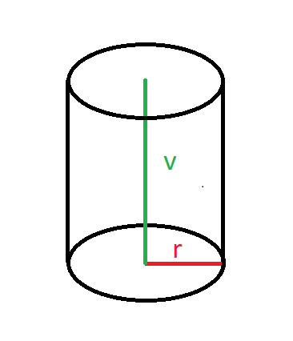
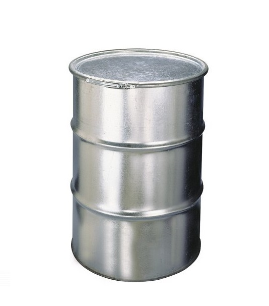

Objem válce se počítá pomocí vzorce V=π.r^2.v .
r - poloměr podstavy
v - výška válce
Výpočet objemu válce má mnoho praktických aplikací v různých odvětvích, zejména v oblastech jako jsou inženýrství a stavebnictví. Některými konkrétními uplatněními jsou:
1. Výpočet kapacity nádob, jako jsou nádrže nebo kontejnery, které mají válcový tvar.
2. Výpočet průměru nebo výšky válce na základě známého objemu, což může být užitečné při plánování rozměrů konstrukce.
3. Výpočet objemu motorových válců, což může být užitečné pro optimalizaci výkonu motoru.
4. Výpočet množství vody, které se vejde do válce pro vodní čerpadlo nebo jiné vodní zařízení.
5. Výpočtu ceny: Pokud víte objem válce a cenu materiálu na jednotku objemu, můžete použít tento výpočet k výpočtu ceny materiálu, který potřebujete pro vaši práci nebo projekt.
Celkově lze tedy říci, že výpočet objemu válce má mnoho praktických využití v různých situacích a je důležitým nástrojem pro plánování, návrh a výrobu.